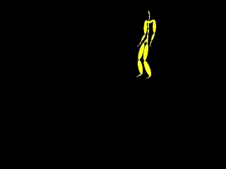
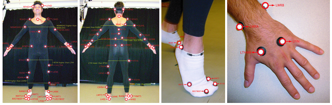
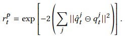
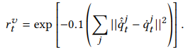
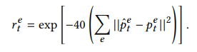

Code accompanying the SIGGRAPH 2018 paper: "DeepMimic: Example-Guided Deep Reinforcement Learning of Physics-Based Character Skills". The framework uses reinforcement learning to train a simulated humanoid to imitate a variety of motion skills from mocap data.
The state s describes the configuration of the character’s body, with features consisting of the relative positions of each link with respect to the root (designated to be the pelvis), their rotations expressed in quaternions, and their linear and angular velocities.
All features are computed in the character’s local coordinate frame, with the root at the origin and the x-axis along the root link’s facing direction
Policies trained to achieve additional task objectives, such as walking in a particular direction or hitting a target, are also provided with a goal g, which can be treated in a similarly fashion as the state.
The action a from the policy specifies target orientations for PD controllers at each joint.
Reference data creation

Network Architecture
Policy π is represented by a neural network that maps a given state s and goal g to a distribution over action π(a|s,g).
The inputs are processed by two fully-connected layers with 1024, and 512 units each, followed by a linear output layer. ReLU activations are used for all hidden units.
Pose reward r^p encourages the character to match the joint orientations of the reference motion at each step.
It is computed as the difference between the joint orientation quaternions of the simulated character and those of the reference motion.

Velocity Reward
The velocity reward r^v is computed from the difference of local joint velocities, with angular velocity of the jth joint. The target velocity is computed from the data via finite difference.

End Effector Reward
The end-effector reward ret encourages the character’s hands and feet to match the positions from the reference motion.

r^c penalizes deviations in the character’s center-of-mass